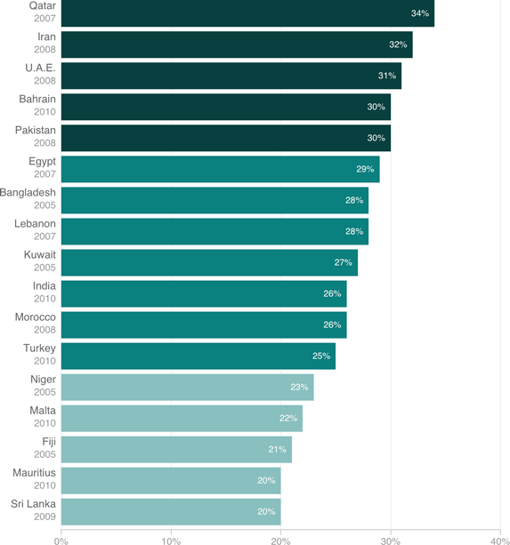

Countries That Lose The Most: The Share Of GDP Lost Due To Economic Gender Gaps

Notes
Year given is the most recent year economic data were available for a given country at the time of the analysis. Selected countries shown have a projected loss of 20 percent or greater, based on economic data from 2005 or earlier.